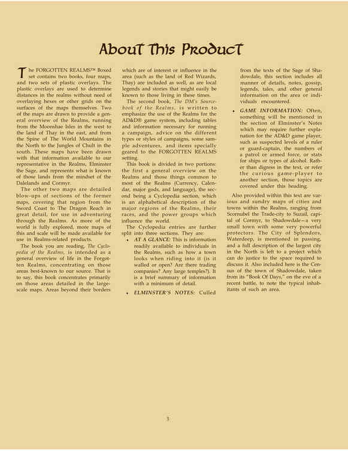

关于本产品 · About This Product

《被遗忘的国度》盒装套装包含两本书、四张地图和两套塑料覆膜。塑料覆膜用于在不必把六角格或其他网格覆盖到地图表面的情况下，测定国度中的距离。
其中两张地图用于展示国度的总体概览：范围从西面的月之海群岛一直到东面的萨伊红袍法师之地，并从北方的世界之脊山脉一直到南方的楚尔特丛林。这些地图依据国度中的代表人物贤者伊尔明斯特所掌握的信息绘制，呈现的是从谷地与科米尔的视角所知晓的那些土地。
另外两张地图是前述地图中部分区域的详细放大图，精确覆盖从剑湾到龙脊海湾的区域，供在国度中冒险时使用。随着世界中更多区域得到充分探索，还会在与国度相关的产品中提供更多该区域的地图及其比例尺。
你正在阅读的这本《国度百科全书》，旨在概览被遗忘的国度中的生活，重点关注我们的信息来源最为熟悉的地区。也就是说，本书主要聚焦于大比例尺地图所详细描绘的区域。地图边界之外、对该区域具有兴趣或影响的地区（例如红袍法师之地萨伊）也会被纳入；那些当地居民在如今这个时代很容易知晓的地方传说与故事也同样包括在内。
第二本书《国度地下城主资料集》旨在强调国度在《高级龙与地下城》游戏系统中的使用方式，其中包括运行战役所需的表格与信息、不同战役类型或风格的建议、一些示例冒险，以及专门为《被遗忘的国度》设定准备的物品。
本书分成两个部分：第一部分是对国度的总体概览，以及国度大多数地区共有的事物（货币、日历、主要神祇和语言）；第二部分是百科全书部分，以字母顺序描述国度的主要地区、当地种族以及影响这个世界的势力集团。
百科条目又分为三个部分：
- 概览（AT A GLANCE）： 这是国度中的人们可以轻易获得的信息，例如骑马进入一座城镇时会看到什么样子（有城墙还是开放的？有贸易公司吗？有大型神殿吗？）。它是信息的简短摘要，细节极少。
- 伊尔明斯特的笔记（ELMINSTER'S NOTES）： 这些内容取自影谷贤者的文献，包括关于该地区或所遇人物的各种细节、笔记、传闻、传奇、故事以及其他一般信息。
- 游戏信息（GAME INFORMATION）： 伊尔明斯特的笔记中经常会提到某些内容，但《高级龙与地下城》玩家可能需要进一步解释，例如某位统治者或卫队长的推测等级、巡逻队或武装部队的人数、船只或酒类的属性。与其在正文中离题解释，或把好奇的玩家引到另一节，这些主题都归在这个标题下。
本书还提供了国度中各式各样的城市与城镇地图，范围从贸易城市斯科努贝尔，到科米尔首都苏扎尔，再到影谷——一个非常小的城镇，却有一些极其强大的保护者。辉煌之城深水城只在文中顺带提及；北方最大的城市需要一项能够配得上讨论它所需篇幅的工程，才会进行完整描述。本书还包括影谷城镇的人口普查，这份资料取自它的《日记》，记录的是一场近期战斗前夕该地居民的典型构成。
按原书三栏顺序逐句核对。